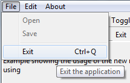
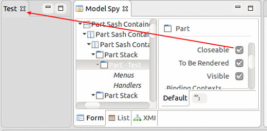
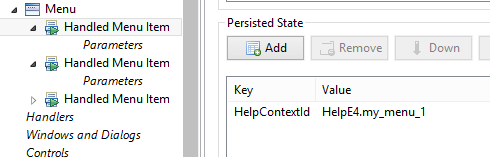
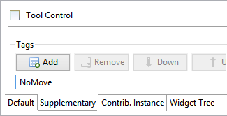
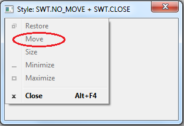

Platform Changes
org.eclipse.jface.resource.ImageDescriptor#createFromURL(URL)API to create icon images already support high-DPI icons out of the box:
Just append "@2x" to the file name and place the high-DPI icons into the same folder as the original icon. If you use OSGi bundles, you can also put the icons into a fragment that contains the same folder structure.
Example:
100%: newclass_wiz.png
200%: newclass_wiz@2x.png
org.eclipse.core.runtime.jobs.Job class. These methods are particularly
convenient with lambdas. For example, to do an asynchronous resource refresh, you can write:
IResource resource = ...;
Job.create("Refreshing files",
monitor -> resource.refreshLocal(IResource.DEPTH_INFINITE, monitor)
).schedule();
If you want the job to be hidden from the user, you can write:
IResource resource = ...;
Job.createSystem(
monitor -> resource.refreshLocal(IResource.DEPTH_INFINITE, monitor)
).schedule();
org.eclipse.core.runtime.ICoreRunnable functional interface. This interface is
functionally equivalent and is intended as a replacement for
org.eclipse.core.resources.IWorkspaceRunnable. All new code should use
ICoreRunnable instead of IWorkspaceRunnable.
org.eclipse.core.runtime.ListenerList has been generified and now implements Iterable<E>.
Due to Java type system constraints, ListenerList#getListeners() still returns Object[].
Clients should not only add type arguments to the ListenerList, but also convert usages of #getListeners()
to an enhanced for loop, thereby taking advantage of the type-safe #iterator().
Old:
ListenerList fInputChangeListeners = new ListenerList();
...
Object[] listeners= fInputChangeListeners.getListeners();
for (int i= 0; i < listeners.length; i++) {
((IInputChangedListener) listeners[i]).inputChanged(fInput);
}
New:
ListenerList<IInputChangedListener> fInputChangeListeners = new ListenerList<>();
...
for (IInputChangedListener listener : fInputChangeListeners) {
listener.inputChanged(fInput);
}
org.eclipse.ui.handlers.HandlerUtil#getCurrentStructuredSelection(event)
API has been added to allow easy access to an IStructuredSelection from a handler. Compared to
HandlerUtil#getCurrentSelection(event) this removes the need to cast and check for
null.
Logger#debug(Throwable) was called,
even if the application was not started in debug mode.
Now, log entries on the debug level are ignored, unless the application is started with the debug flag (-debug).
IConverter.create(Object, Object, Function) allows to create a converter
using a lambda expression. On a similar note, the static UpdateValueStrategy.create(IConverter)has been added.
org.eclipse.core.databinding.observable.value.ComputedValue can compute custom values from other tracked getters inside its calculate method.
Before this change, you had to create a subclass of ComputedValue, but the new create method, which expects a Supplier<T>
allows you to create an instance of ComputedValue by using a lambda expression.
Examples:
IObservableValue<Integer> listSizeObservable = ComputedValue.create(() -> observableList.size());or
IObservableValue<String> fullNameObservable = ComputedValue.create(() -> personFirstNameObservable.getValue() + " " + personLastNameObservable.getValue());
More details about tracked getters can be found in the org.eclipse.core.databinding.observable.ObservableTracker's
getterCalled(IObservable) method. Almost every IObservable's get methods are tracked getters.
org.eclipse.core.databinding.observable.sideeffect.ISideEffect allows you to react
to changes in observables without attaching listeners. For example, the
following code will bind the text "Your username is: xxxx" to a label and
will update the label whenever the username changes.
IObservableValue<String> username = ...
Label yourUsername = ...
ISideEffect sideEffect = ISideEffect.create(
() -> {return "Your username is: " + username.getValue();},
yourUsername::setText);
ISideEffects will automatically determine which observables to
listen to, can react to changes in multiple observables,
and will avoid performing excessive updates if the observables fire
many change events in a short period of time.
ISideEffectFactory to create several ISideEffect instances that share the same life cycle.
For example, all ISideEffect instances that are created by the ISideEffectFactory obtained from the WidgetSideEffects#createFactory(Widget disposableWidget) method are automatically disposed once the corresponding widget is disposed.
Example:
ISWTObservableValue personFirstNameTextObservable = WidgetProperties.text(SWT.Modify) .observe(personFirstNameText); ISWTObservableValue personLastNameTextObservable = WidgetProperties.text(SWT.Modify) .observe(personLastNameText); ISideEffectFactory sideEffectFactory = WidgetSideEffects.createFactory(personFirstNameText); sideEffectFactory.create(person::getFirstName, personFirstNameText::setText); sideEffectFactory.create(personFirstNameTextObservable::getValue, person::setFirstName); sideEffectFactory.create(person::getLastName, personLastNameText::setText); sideEffectFactory.create(personLastNameTextObservable::getValue, person::setLastName);
org.eclipse.jface.viewers.StructuredViewer#setFilters(ViewerFilter...)org.eclipse.jface.databinding.viewers.ViewerSupport#bind(*, IValueProperty...)org.eclipse.swt.graphics.PaletteData#PaletteData(RGB...)org.eclipse.swt.widgets.Combo#setItems(String...)
org.eclipse.jface.dialogs.MessageDialog class has now an additional vararg constructor that simplifies passing button labels.
Old:
new MessageDialog(shell, "MessageDialog", null, "DialogMessage",
MessageDialog.NONE, new String[] { "Button1", "Button2" }, 0);
New:
new MessageDialog(shell, "MessageDialog", null, "DialogMessage", MessageDialog.NONE, 0, "Button1", "Button2");
org.eclipse.jface.dialogs.StatusDialog and its subclasses are now styled in the dark theme.
Before this change, the message area was hard-coded to white.

MApplication#getCommand(String)
is a faster way to access a command directly via id. This new API is used by the Eclipse IDE
to speed up its application launching.
EPartService#switchPerspective(String/MPerspective)
API has been added.
IEclipseContext of the MApplication object can now be directly accessed via a child context, via the IWorkbench.APPLICATION_CONTEXT_KEY key.
// this is a child context
IEclipseContext ctx =...;
// get the application context
IEclipseContext applicationContext = ctx.get(IWorkbench.APPLICATION_CONTEXT_KEY);
setCloseable method on an org.eclipse.e4.ui.model.application.ui.basic.MPart instance will
now change the visibility of the close button for the corresponding part.

org.eclipse.e4.ui.workbench.UIEvents.UILifeCycle.APP_SHUTDOWN_STARTED event will be fired now.
Previously, this only worked for Eclipse RCP applications running in the compatibility mode,
and in mixed mode applications which use both Eclipse 3 and 4 APIs.
MCommand, your MHandledMenuItem or your MDirectMenuItem model elements by adding an entry to the Persisted State Map with the key 'HelpContextId' and your help context id as the value.

'NoMove' tag.

javax.annotation package no longer require a minimum versionjavax.annotation package.
The Eclipse runtime will resolve all components to the same version (JVM or provided by the Eclipse Platform).
This avoids a common error in Eclipse RCP implementations in which @PostConstruct
was resolved to different classes in the bundle classpath.
This change is backwards compatible, i.e., a dependency with a minimum version still works correctly.
Equinox Changes
org.eclipse.core.runtime.Adapters.adapt(...) provides a new unified way to access every kind of adapter. It checks for
implemented interfaces, IAdaptable, and adapters registered with the adapter manager.
It may also activate plug-ins if necessary to provide the requested adapter.
And it also performs a null check on the source object, so calling code doesn't have to do that.
// Old way
IResource selectedResource;
if (selection instanceof IAdaptable) {
selectedResource = ((IAdaptable)selection).getAdapter(IResource.class);
}
// New way
IResource selectedResource = Adapters.adapt(selection, IResource.class);
org.eclipse.core.runtime.SubMonitor.split(...) is an easy, efficient way to check for Job cancellation without any
boilerplate. It creates a new child progress monitor, checks for cancellation, and
throws OperationCanceledException if necessary. Using this instead of SubMonitor.newChild
or SubProgressMonitor will guarantee that your Jobs respond to cancellation quickly.
// Old way
void myMethod(IProgressMonitor monitor) {
SubMonitor subMonitor = SubMonitor.convert(monitor, 2);
if (subMonitor.isCanceled()) {
throw new OperationCanceledException();
}
childMethod1(subMonitor.newChild(1));
if (subMonitor.isCanceled()) {
throw new OperationCanceledException();
}
childMethod2(subMonitor.newChild(1));
}
// New way
void myMethod(IProgressMonitor monitor) {
SubMonitor subMonitor = SubMonitor.convert(monitor, 2);
childMethod1(subMonitor.split(1));
childMethod2(subMonitor.split(1));
}
// Old way
void myMethod(IProgressMonitor monitor) {
SubMonitor subMonitor = SubMonitor.convert(monitor, 2);
uncancellableMethod(null);
subMonitor.worked(1)
cancellableMethod(subMonitor.newChild(1));
}
// New way
void myMethod(IProgressMonitor monitor) {
SubMonitor subMonitor = SubMonitor.convert(monitor, 2);
uncancellableMethod(subMonitor.newChild(1,
SubMonitor.SUPPRESS_ISCANCELED | SubMonitor.SUPPRESS_BEGINTASK);
cancellableMethod(subMonitor.newChild(1));
}SWT Changes
To shield existing clients from resolution differences, SWT now uses the Cocoa model on all three platforms. Existing SWT APIs keep using the well-known coordinate system in SWT points. In high-DPI environments, these SWT points are transparently scaled to native pixels.
To create DPI-aware org.eclipse.swt.graphics.Images, use these constructors
that have already been provided in the Mars release:
Image(Device, ImageFileNameProvider)Image(Device, ImageDataProvider)
Image to give you direct access to the pixel data on high-DPI monitors.
Image#getImageDataAtCurrentZoom(): Returns anImageDatathat contains the full-resolution pixel data at the current OS zoom levelImage#getBoundsInPixels(): Returns the image dimensions in pixels at the current OS zoom level
"org.eclipse.swt.internal.deviceZoom"
Note: This is a read-only value, so setting it on the command line doesn't make sense.
Furthermore, SWT doesn't use the deviceZoom when HighDPI support is disabled via -Dswt.autoScale=false,
see Tweaking SWT's auto-scaling
requestLayout() method to the Control and Composite classes.
This method does essentially the same thing as widget.getShell().layout(new Control[] {widget}, SWT.DEFER);
The snippet, above, is currently the most efficient method of triggering layouts in SWT,
but most developers are unaware of this. Most Eclipse developers invoke Composite.layout(),
which is worse in the sense of performance. This new API is intended to make it easier for developers
to adopt the more efficient mechanism as opposed to using Composite#layout().
However, be aware that changing existing invocations of layout() to requestLayout()
may break code that assumes that controls are completely sized and positioned at a certain point in time.
SWT.NO_MOVE to create a Shell with no move behavior. Using this style will create the
title trim even if no other trim style is specified. The title trim will not be created when SWT.NO_TRIM is specified.
Note that this style bit is a hint.

SWT.AUTO_TEXT_DIRECTION has been introduced to indicate
Bidi "auto" text direction. This is now also supported by the StyledText control.
Auto text direction was introduced in the Mars (4.5) release as a bitwise OR of
SWT.LEFT_TO_RIGHT | SWT.RIGHT_TO_LEFT
and it was already implemented in all native controls.
Now, SWT.AUTO_TEXT_DIRECTION is a dedicated SWT constant for this.
Behavior: When SWT.AUTO_TEXT_DIRECTION is set, the text direction is derived from the direction of the first strong Bidi character.
Note: This is a HINT and it works on Windows only.
Usage: control.setTextDirection(SWT.AUTO_TEXT_DIRECTION);

org.eclipse.swt.widgets.Link#setLinkForeground(Color) has been added
that allows you to set the
foreground color of the hyperlink text in a Link widget.
The corresponding getter Link#getLinkForeground() has been added which returns
the foreground color of the hyperlink text in the Link widget.
For an example, see Snippet182.